Art Without Gatekeepers: How AI is Rebuilding the Creative Economy
Try It — Action Sketch
1. Inventory your skills: what do AI tools amplify vs. replace? 2. Experiment with AI-assisted workflow (not AI-generated — AI-assisted) 3. Build direct distribution: portfolio site, social presence, email list 4. Explore interactive/generative formats that galleries can't replicate 5. Price for the new market: commissions, prints, installations, licensing 6. Document your process — the behind-the-scenes is the new gallery wall
Connected Posts (12)
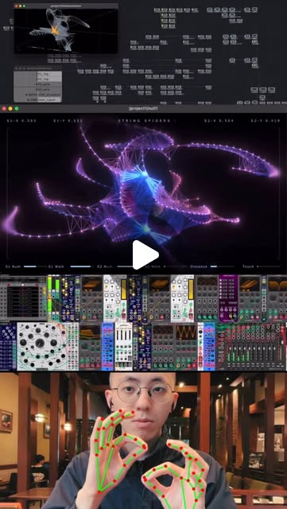
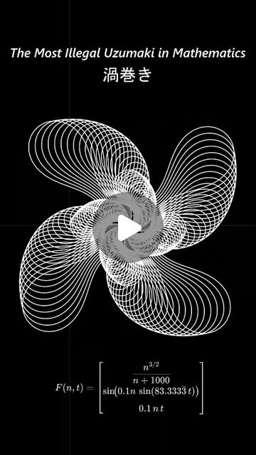
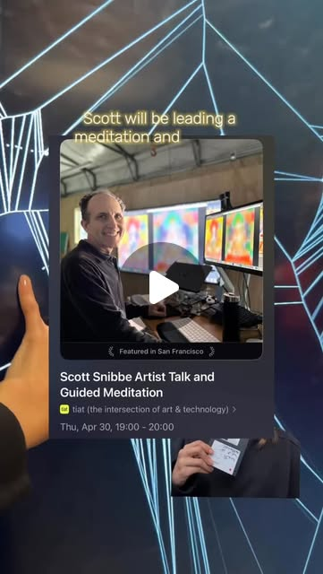
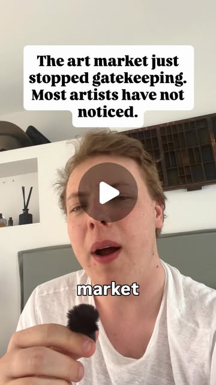
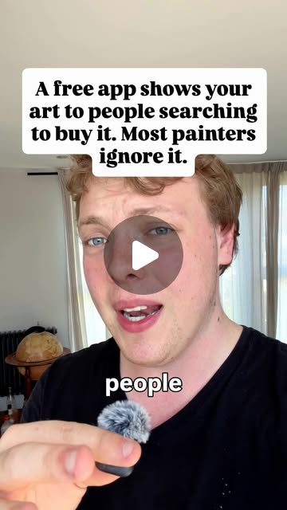
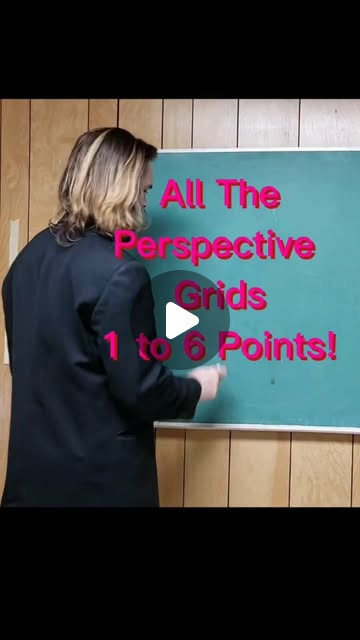
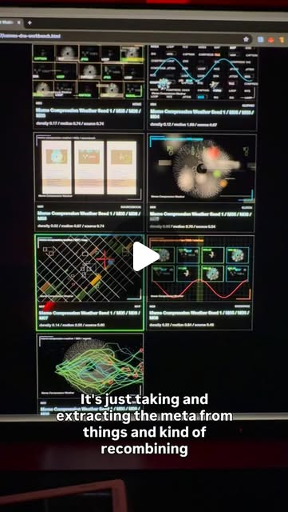
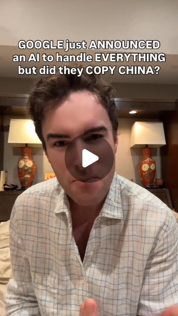
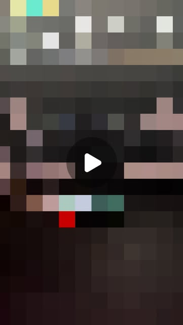
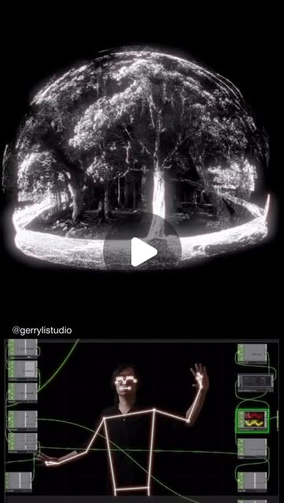
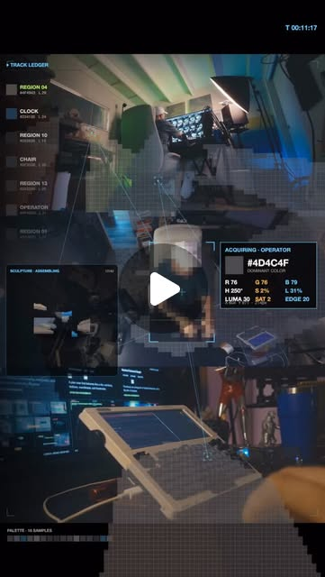
Prompt system — run this yourself
Pasteable into Claude Code, Claude, or any agent. One-shot for the whole result, step prompts when you want to steer. Every step carries its own audit; the gap audit makes the agent find and fill what it missed.
Mission. Build a working direct-to-collector practice for one artist in 30 days. The pieces are: a taste atlas extracted from their own references (the @rndyrbrts method); one interactive or generative work that a gallery wall cannot hold (MediaPipe plus TouchDesigner, or a browser sketch); a Pinterest-as-search-engine pipeline (the @creativeflairhq five-step setup); and a priced offer ladder with copyright-clean terms. Done means the work is live and linked, every creator claim is checked against market data, and the channel test against an Instagram control has produced real numbers: clicks, inquiries and sales.
1 · Deeper, not bigger
- What a top professional would do (that you didn't ask for): A working gallerist or art advisor would start from sales data, not vibes. They would read the Art Basel and UBS Art Market Report and the Hiscox Online Art Trade Report to see what share of sales actually happen online and at what price bands. They would settle authorship and copyright before selling anything AI-assisted, because the US Copyright Office's 2025 report on copyrightability says purely prompted output is not protectable and human arrangement and modification is. They would treat each channel as an experiment with a control and a 30-day window. They would set a price ladder anchored to comparable sales, not to hours spent.
- Rawest material to start from: The artist's own archive: originals, sketches, process video and past sales records. The Art Basel and UBS Art Market Report and the Hiscox Online Art Trade Report for channel and price-band data. The US Copyright Office's January 2025 report, Copyright and Artificial Intelligence Part 2. The commercial-use terms of Runway, Kling, Sora, Veo and Gemini. Pinterest Business Analytics exports and Instagram Insights exports. MediaPipe's Hands docs and the TouchDesigner MediaPipe plugin by Torin Blankensmith. Scott Snibbe's documentation of 'Bubble Harp' and related Voronoi works. The curlicue-fractal math: turning angle theta_n = pi x s x n^2 for an irrational s.
- Methods and tools: A manifest-first taste atlas (one row per reference: source, file, dimensions, why it belongs), CLIP embeddings via open_clip, HDBSCAN clustering, and behavior tags in place of adjective tags, as @rndyrbrts says: 'dense grid, quiet toolbar', not 'futuristic'. TouchDesigner 2023 with the MediaPipe plugin for hand tracking, or p5.js with ml5 handPose for a browser version. A p5.js curlicue and a d3-delaunay Voronoi sketch. Pinterest business account, Rich Pins, and keyword captions written as search queries. UTM-tagged links into a Shopify or Big Cartel storefront. A 30-day channel test with Instagram as the control arm. Comparable-sales pricing.
- What proves it right: Paying collectors and inquiry emails, counted per channel through UTM links. Pinterest Analytics outbound clicks compared with Instagram link clicks over the same 30 days. The Art Basel and UBS report figures that the 'collectors buy on social' claim must match. The Copyright Office report that the authorship statement must agree with. The interactive piece running at 30 fps or better on the target exhibition machine through a 2-hour soak test. A blind preference test of the AI-assisted versus non-assisted series by 10 or more people outside the artist's circle.
Rewritten prompt — ask for exactly that:
You are an art advisor and a creative technologist. Do not write motivation. Build and measure a direct-sales practice for me in 30 days. 1. Check the claims. @creativeflairhq says collectors now find and buy from artists on social media, and that 'the data this year is blunt'. Find that data in the Art Basel and UBS report and the Hiscox online report. Gemini Omni's '86% of a Pro plan's daily quota for two 10-second clips' needs checking too. 2. Build my taste atlas the @rndyrbrts way: a manifest of my references, behavior tags, clusters from open_clip and HDBSCAN, and a thesis of what my work always and never does. 3. Build one interactive piece: a hand-tracked TouchDesigner and MediaPipe system like @pepepepebrick's string-spiders, or a p5.js curlicue or Voronoi sketch in the Snibbe lineage. It must run 2 hours without crashing. 4. Set up Pinterest as a search engine using the five steps, with UTM links to my store, and keep Instagram as the control. 5. Write an authorship statement consistent with the Copyright Office's 2025 report, plus commercial-use checks for every AI tool I touch. 6. Build a price ladder from comparable sales. Return the atlas, code, a channel dashboard and a gap list of what remains unverified.
2 · One-shot prompt
ROLE You are an art advisor who reads sales data and a creative technologist who ships interactive work. You are working for one artist. You build assets, not inspiration. CONTEXT The saved posts make these claims: - @creativeflairhq: 'collectors are finding artists on social media and buying from the ones they feel connected to'; 'the artists winning now are not the most talented, they are the most visible'. Also a Pinterest recipe: free business account, tall images, 'captions written like a search', every pin linked to a buy page, five pins a week, and 'a single pin keeps working for years'. - @rndyrbrts: taste into data and back into art. Collect a moodboard, build a manifest, measure 'palette, contrast, density, spacing, motion', and 'tag behavior, not adjectives'. Cluster into 'visual DNA channels', then generate live HTML or canvas with an agent. His Claude Code room probe sampled the color and luminance of 42 tracked objects from iPhone clips. - @pepepepebrick: MediaPipe plus TouchDesigner hand-tracked spiders on a generated web, where leg count modulates pitch. - @gerrylistudio: TouchDesigner, MediaPipe and Gaussian splats. - @tiat.place: Scott Snibbe's interactive Voronoi works from 1997. - @fascinating.fractals: curlicue fractals. - @encycloped_ai: Ben Affleck says 'craftsman is knowing how to work, art is knowing when to stop', and that VFX costs are collapsing. - @gigaqian: Gemini Omni testers report two 10-second clips used about 86% of a Pro plan's daily quota. HARD CONSTRAINTS - AI-assisted, not AI-generated. Every sold piece carries a human authorship statement consistent with the US Copyright Office's 2025 report on copyrightability. - Check each AI tool's commercial-use terms before its output goes into a sellable piece. - Every channel claim is tested against a control. Instagram is the control arm for Pinterest. Use UTM links on every outbound URL. - Write no growth promises. Report counts. DELIVERABLES 1. claims.csv: each claim above with a primary source (Art Basel and UBS report, Hiscox report, Google's Gemini quota docs) or UNVERIFIED. 2. atlas/: manifest.csv with one row per reference (title, source, file, dimensions, why it belongs); behavior tags; open_clip embeddings; HDBSCAN clusters; and thesis.md stating what the work always does and never does. 3. piece/: one interactive work. Option A is a TouchDesigner .toe using the MediaPipe plugin, where hand landmarks drive a generated structure and sound. Option B is a p5.js sketch, either a curlicue (theta_n = pi x s x n^2 for an irrational s) or a d3-delaunay Voronoi that responds to the cursor or camera. It needs a README with hardware requirements and a 2-hour soak-test log. 4. channels/: a Pinterest board plan of 20 pins with search-phrased captions and UTM links, a posting calendar of 5 per week, and an Instagram control plan with the same images and the same weeks. 5. offer/: a price ladder (prints, originals, commissions, licensing, installation) anchored to five or more comparable sales, plus authorship.md and a terms sheet. 6. dashboard.csv: daily impressions, outbound clicks, inquiries and sales per channel. BUILT-IN GAP ANALYSIS Write a Gaps section listing claims with no source, tools whose terms you could not confirm, references in the atlas with unknown licenses, and channel metrics that are not yet 30 days old. Fill what you can, such as finding the report table or the ToS clause. Mark the rest UNFILLED, with the reason. SELF-QUESTIONS Does the report data actually show collectors buying on social, or only browsing? Is the atlas extracting behavior, or copying images? Would the piece survive a gallery opening, meaning 2 hours, a crowd, and bad light for hand tracking? Is the price ladder anchored to real comparable sales? STOP Stop when the piece passes its soak test, the channels are live with UTM tracking, and claims.csv has no blank status. Stop and ask before posting publicly on the artist's accounts. RETURN Return the folders above, plus report.md with the sections Claims, Atlas, Piece, Channels, Offer, Gaps and Next 30 days.
3 · Step-by-step prompts
Step 1 — Ground truth: market data and the artist's own archive
Goal: Check the creators' market claims against primary data, and inventory the artist's raw material.
Build claims.csv with the columns claim, creator, source, status and evidence. Check these claims: - @creativeflairhq's 'collectors are finding artists on social media and buying from the ones they feel connected to' and 'the data this year is blunt'. Find the online-sales share and buyer-discovery figures in the latest Art Basel and UBS Art Market Report and the Hiscox Online Art Trade Report. - The Pinterest claim that 'one pin keeps working for years'. Look for Pinterest's own content-lifespan statements. - Affleck's claim that VFX costs are collapsing. - @gigaqian's Gemini Omni quota figure of 86% of a Pro plan for two 10-second clips. Check Google's plan documentation. Then inventory the artist's archive in archive.csv with the columns file, medium, year, sold (y/n), price, buyer channel and process footage (y/n). Pull the last 12 months of sales and inquiries with their source channel. This becomes the baseline that every later step is measured against.
Expect: claims.csv with 8-12 rows, all sourced or UNVERIFIED, and archive.csv covering every work from the last 3 years with its sales channel.
Audit before moving on: Every 'verified' row must quote the exact figure and page from the report. If sales data is missing for more than 20% of works, flag it, because the channel test baseline is then weak. Fail on any claim marked verified from a secondary blog.
Step 2 — Taste atlas from references
Goal: Turn the artist's references into a structured, behavior-tagged atlas and thesis.
Follow @rndyrbrts' method exactly. Put 300-1,000 references in one folder, including winners, rejects, screenshots and scans. Write manifest.csv with one row per reference: title, source URL, local file, type, dimensions, preview note, why it belongs and license. Measure each reference: dominant palette (k-means in Lab space, 5 colors), contrast (RMS luminance), edge density (Canny pixel ratio) and whitespace ratio. Tag behavior, not adjectives. Use 'dense grid', 'quiet toolbar', 'radial', 'map scan', 'drift', 'caption stack'. Never use 'futuristic' or 'moody'. Embed every image with open_clip ViT-B-32 and cluster with HDBSCAN (min_cluster_size=8). Name each cluster as a visual DNA channel with a recipe covering layout, motion, palette, density, interaction and source ideas. Write thesis.md from the evidence: what the work always does, never does, and why.
Expect: atlas/manifest.csv, atlas/metrics.csv, atlas/clusters.json with 3-8 named channels, and atlas/thesis.md of about 400 words.
Audit before moving on: Spot-check 20 random rows. The tags must describe visual behavior. Rerun clustering with min_cluster_size of 5 and 12, and keep only channels that persist. Any reference with an unknown license is excluded from generation inputs.
Step 3 — Build the interactive piece
Goal: Ship one interactive or generative work a static wall cannot hold.
Pick one option based on the atlas thesis. Option A: TouchDesigner with Blankensmith's MediaPipe plugin. Hand landmarks (21 points per hand) drive a generated structure, the way @pepepepebrick's spiders grow legs near web nodes and the leg count sets pitch. Map the landmarks to CHOPs, then to geometry instancing, then to an Audio Oscillator CHOP. Add a proximity interaction between two hands. Option B: a p5.js browser piece. It can be a curlicue (step forward, turn by theta_n = pi x s x n^2, where s is sqrt 2, e or the golden ratio, with s exposed as a slider) or a d3-delaunay Voronoi field in the lineage of Snibbe's 1997 work, responding to the pointer or to ml5 handPose. Use the atlas palette and motion recipe from step 2. Run a 2-hour soak test. Log fps every 10 seconds, memory and tracking dropouts. Test under three lighting conditions.
Expect: piece/ containing the .toe or p5 project, a README with hardware specs, soak.csv, and a 30-second screen capture.
Audit before moving on: Fail if fps drops below 30 for more than 1% of samples, if memory grows by more than 20% over the 2 hours, or if tracking drops out more than 5% of frames in normal light. Fix and rerun before moving on.
Step 4 — Rights and authorship
Goal: Make every sellable piece legally clean and honestly described.
List every AI tool used in the practice, such as Runway, Kling, Sora, Veo, Gemini and Claude Code. For each one, quote the current commercial-use clause from its terms and record the plan tier it applies to. Read the US Copyright Office's January 2025 report, Copyright and Artificial Intelligence Part 2. Summarize what is and is not registrable: prompts alone are not, while human selection, arrangement and modification can be. Write authorship.md for each piece type. It states what the human did and what the tools did, in plain language a collector can read. Check that atlas references are used for structure extraction only, and that no reference image appears in an output. Write a terms sheet covering edition sizes, licensing scope, and installation rights for the interactive piece.
Expect: rights/tools.csv with quoted clauses and URLs, rights/authorship.md, and rights/terms.md.
Audit before moving on: Every tool row must have a quoted clause and a fetch date. Run a perceptual-hash (imagehash phash) comparison of outputs against references. Any distance below 8 is a near-copy, and that output is pulled.
Step 5 — Channels with a control
Goal: Launch Pinterest as a search engine and measure it against Instagram over 30 days.
Apply @creativeflairhq's five steps: 1. Set up a free Pinterest business account and claim the website. 2. Export tall 2:3 images at 1000x1500 or larger. 3. Write captions as searches, for example 'large blue abstract painting for living room'. Generate 20 caption candidates per piece from Pinterest Trends and search autocomplete, not from adjectives. 4. Link every pin to the buy or contact page with UTM parameters: utm_source=pinterest&utm_campaign=<piece>. 5. Post 5 pins a week. The control arm is the same images posted on Instagram in the same weeks, with link-in-bio UTM utm_source=instagram. Build dashboard.csv with daily impressions, outbound clicks, store sessions, inquiries and sales per channel. Pull the data from Pinterest Analytics, Instagram Insights and the store. Write the pass rule in advance: Pinterest beats Instagram on inquiries per 1,000 impressions over 30 days.
Expect: channels/pin_plan.csv with 20 rows, channels/calendar.md, and dashboard.csv populated daily.
Audit before moving on: Confirm every pin URL has UTM tags by crawling the board. If either arm is missing more than 3 days of data, extend the window rather than calling a winner. Do not declare a result before day 30.
Step 6 — Offer and price ladder
Goal: Price the work for the new channels using comparable sales.
Build a five-rung ladder: open-edition prints, limited prints (editions of 25-50), originals, commissions, and licensing or installation of the interactive piece. Anchor each rung to at least five comparable sales from artists at a similar career stage. Use Artsy, Saatchi Art, Singulart or the artist's own sales history, and record each comparable's URL and date. For the interactive piece, price the installation as a day rate plus a hardware rental and a license fee, and compare it with published new-media commission budgets where they exist. Write one 'process' offer, such as a timelapse or source-file tier, because the posts argue that behind-the-scenes is the new gallery wall. Test it as a product. Avoid price claims that cannot be defended. Record the platform fee for each sales channel next to its price.
Expect: offer/ladder.csv with prices, comparables and margins, and offer/process_tier.md.
Audit before moving on: Each rung must have five or more comparables with URLs. Flag any price more than 2x the comparable median. Margins must be positive after platform fees, printing and shipping, so recompute with real fee schedules.
Step 7 — Validate against oracles and write the gap report
Goal: Judge the practice by external evidence and list what is still missing.
At day 30, run the oracle pass: (a) Inquiries and sales per channel from UTM data, Pinterest against the Instagram control. (b) Whether the claims.csv market claims held against the Art Basel, UBS and Hiscox numbers. (c) The interactive piece's soak-test pass and one live public showing with visitor count. (d) A blind preference test. Show 10 or more outside viewers pairs of an AI-assisted and a non-assisted piece, unlabeled, and record their choice and willingness to pay. (e) The rights audit: every sold piece has an authorship statement and a tool-terms check. Write report.md with the sections Claims, Atlas, Piece, Channels, Offer, Results, Gaps and Next 30 days. State plainly which channel produced money and which only produced impressions. Rank the gaps by revenue impact.
Expect: report.md, an oracle table with five rows, and 5-10 ranked gaps.
Audit before moving on: Any channel 'win' without UTM-backed inquiry counts is downgraded to 'impressions only'. If the blind test has fewer than 10 raters, mark it underpowered. Confirm no claim in the report lacks a claims.csv row.
4 · Gap analysis and audit
You are an independent reviewer: an art advisor plus an engineer. Open report.md, claims.csv, atlas/, piece/, rights/, channels/, offer/ and dashboard.csv. 1. Enumerate every claim in the report about market data, channel results, tool rights, performance and pricing. Mark each one verified (with a file or URL), unverified, or false. 2. Recompute the channel comparison from dashboard.csv. Do inquiries per 1,000 impressions actually favor the stated winner? Is the window 30 days or more? 3. Rerun the soak test for 20 minutes and compare against soak.csv. 4. Check that every AI tool in the pipeline has a quoted commercial clause. Check that authorship.md matches what the code and process footage show. 5. Run phash between outputs and atlas references and list any near-copies. 6. List what is missing: unsourced claims, comparables with no URL, a blind test that was never run, a show that never happened. 7. Rank the issues by impact on revenue and legal exposure. Fix the top three now. 8. Report what you could not fix and why. Return audit.md with the columns claim, status, evidence and fix, plus 'Remaining gaps' and an A-F grade.
Questions the agent must ask itself before it says done:
- Does the Art Basel/UBS or Hiscox data show collectors buying through social, or only discovering there?
- Is 'the most visible wins' supported by any data, or is it the @creativeflairhq book pitch?
- Do my atlas tags describe behavior ('dense grid', 'drift'), or did adjectives sneak back in?
- Did any reference image leak into an output closely enough to fail a phash check?
- Will MediaPipe hand tracking hold up under gallery lighting and a crowd of hands?
- Which AI tools in my pipeline lack confirmed commercial-use rights on my plan tier?
- Does my authorship statement match the Copyright Office's 2025 position on human contribution?
- Is Pinterest beating Instagram on inquiries, or only on impressions?
- Are my prices anchored to five or more real comparables, or to hours spent?
- What does Affleck's 'knowing when to stop' look like as an explicit rule in my thesis.md?
5 · What proves it right
- Collectors: count UTM-attributed inquiries and sales per channel over 30 days, with Pinterest against the Instagram control.
- Art Basel and UBS Art Market Report and Hiscox Online Art Trade Report: quote the figures the social-discovery claim must match.
- US Copyright Office, Copyright and Artificial Intelligence Part 2 (January 2025): the authorship statements must be consistent with it.
- Exhibition hardware: the interactive piece holds 30 fps or better for a 2-hour soak and one public showing without a restart.
- Blind raters: 10 or more people outside the artist's circle choose between AI-assisted and non-assisted pieces without labels.
6 · Failure modes
- Visibility without sales. Tell: impressions climb while inquiries stay flat. Fix: judge channels on inquiries per 1,000 impressions and sales, never reach.
- The atlas becomes a copy machine. Tell: phash distances under 8, or a collector recognizes a source. Fix: generate only from extracted rules and drop near-copies.
- The interactive piece dies at the opening. Tell: fps collapses or tracking is lost under spotlights. Fix: soak-test under three lighting setups and add an idle attract mode.
- Rights surprise. Tell: a tool's free tier forbids commercial use. Fix: tools.csv with quoted clauses before anything sells.
- The pricing race to the bottom. Tell: prices set below comparables to 'get started'. Fix: anchor to comparables and use the print rungs for accessibility.
- Calling the test early. Tell: a winner is declared at day 9. Fix: a pre-registered 30-day window and pass rule.
7 · Agent direction (unattended runs)
Start with the Art Basel/UBS and Hiscox reports and the artist's own sales records, because they set the baseline. Cache the report PDFs and the tool ToS pages with fetch dates under sources/. Spawn one sub-agent for the interactive piece (TouchDesigner or p5.js), since it is independent engineering work. Give it the atlas palette, the motion recipe and the soak-test thresholds. Keep claims, rights and pricing in the main thread, because they need judgment. Do not post to the artist's social accounts, open a storefront, or send outreach without explicit approval. Draft everything and stop for review. Ask the human for the reference folder, sales history and account access at the start, because no step works without them. Return the atlas/, piece/, rights/, channels/ and offer/ folders, dashboard.csv, report.md and audit.md. The final message gives the oracle table and the channel verdict in one line each.
Prompt system updated 2026-10-22 · all prompt systems · JSON